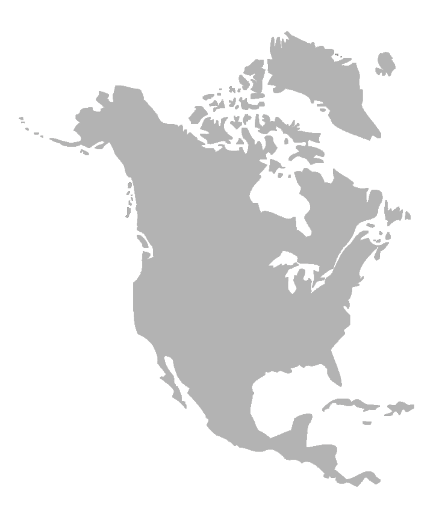
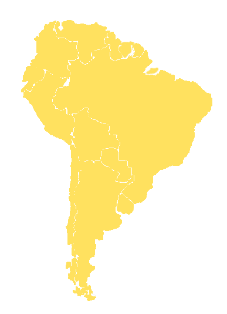
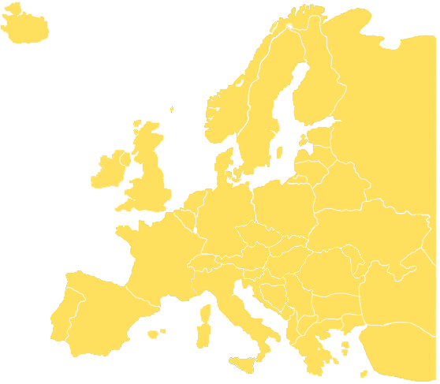
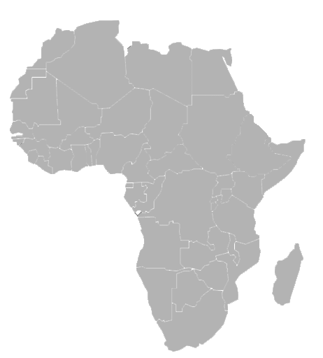
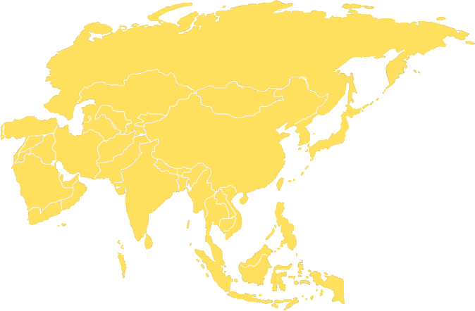
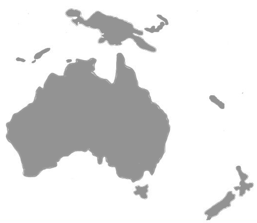

Severní Amerika
Pozůstatky dinosaurů jsou v Severní Americe dobře známy. Mnoho jejich koster bylo nalezeno v západních částech USA a Kanady, kde jsou obrovské skalní masivy v podobě rozeklaných "badlands" vystaveny působení větru a slunečního záření.
Expedice směřující na "Divoký západ" objevily některá bohatá naleziště již v minulosti, ale i dnes různé ústavy i instituce organizují velké výpravy pátrající speciálně po dinosaurech.
Dinosauři: Parasaurolophus, Triceratops, Deinonychus, Corythosaurus, Camarasaurus, Apatosaurus, Allosaurus, Tyrannosaurus, Stegosaurus, Saurolophus a Coelophysis


Jižní Amerika
Jihoameričtí dinosauři nejsou tak dobře známí jako dinosauři severoameričtí, jsou však neméně důležití. Většina nálezů pochází z Brazílie, nacházeni jsou však také v Chile, Kolumbii, Uruguayi a Peru.
Dinosauři: Saltasaurus, Herrerasaurus, Staurikosaurus, Patagosaurus a Piatnitzkyosaurus
Antarktida
Zbytky dinosaurů v zamrzlé Antarktidě byly objeveny až v posledních několika letech. Doposud zde byly nalezeny dva druhy. První má příbuzné vztahy k rodu Hypsilophodon a v současné době jeho nález studují paleontologové v Londýně.

Evropa
Evropa by se mohla nazývat "domovem" dinosaurů. Zde bylo totiž v 19. století při popisu obrovských zkamenělých plazů poprvé použito označení "dinosaur" Protože Evropa je většinou pokryta lesy nebo je půda zemědělsky obdělávána, byly pozůstatky dinosaurů nacházeny převážně v lomech nebo na mořském pobřeží. I v dnešní době zde stále dochází k novým a překvapivým nálezům.
Dinosauři: Spinosaurus, Baryonyx, Hypsilophodon,Iguanodon, Plateosaurus a Compsognathus
Afrika
Afrika je kontinent neobyčejný tím, že ve většině jejích oblastí se horniny usazovaly v době, kdy dinosauři žili. Zbytky nejstarších afrických forem pocházejí z jihu kontinentu. Ze Sahary, Alžírska, Egypta a Maroka pocházejí naopak nejmladší afričtí dinosauři.
Nicméně nejznámější naleziště Tendaguru je na východě v Tanzanii.
Dinosauři: Lesothosaurus, Massospondylus, Barosaurus a Brachiosaurus


Asie
Asijští dinosauři představují nejnovější a svým způsobem vzrušující přírůstky do mapy rozšíření dinosaurů. Američtí, ruští, polští a mongolští paleontologové objevili pravé zkamenělé poklady v poušti Gobi a nové objevy jsou neustále hlášeny z Číny a Indie.
Dinosauři: Dravidosaurus, Mamenchisaurus, Tuojiangosaurus, Tsintaosaurus, Prenocephale, Oviraptor, Veloricaptor, Saurolophus, Protoceratops, Tarbosaurus, Shantungosaurus a Tsintosaurus
Austrálie a Nový Zéland
Pozůstatky australských dinosaurů jsou nacházeny na jihu a východě kontinentu a mnohé byly objeveny až v posledních letech. První nález na sousedním Novém Zélandu byl učiněn teprve v roce 1980, na Severním ostrově.
Dinosauři: Rhoetosaurus, Leaellynosaura a Minmi
